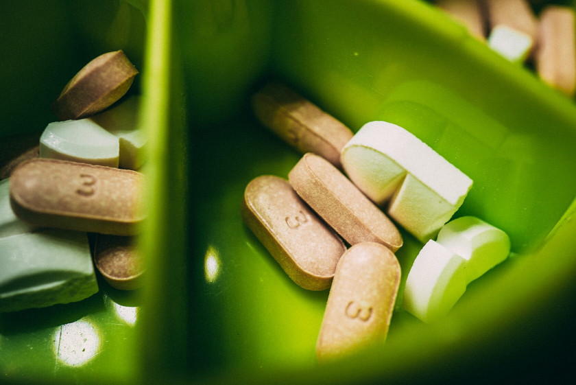

Zdrowa dieta wegańska: podstawy
Zmiana sposobu odżywiania to poważne wydarzenie. To, czy weganizm stanie się najlepszą decyzją w twoim życiu, czy też rozczarowaniem, zależy od tego, jak dobrze opanujesz podstawy.

Jeśli chcesz zachować i wzmocnić zdrowie po rezygnacji z produktów odzwierzęcych, zamiast nabawić się zaburzeń hormonalnych i wypadających włosów po pół roku — ten poradnik jest dla ciebie.
Krok 1: uwaga na białka i tłuszcze
Żywność roślinna to głównie węglowodany, dlatego ważne jest, aby nie ulec pokusie nadmiernego ich spożywania. Białka i tłuszcze, przynajmniej na początku, należy skrupulatnie liczyć.
Norma białka to 1 g na kilogram masy ciała, czyli przy wadze 60 kg dzienne zapotrzebowanie wynosi 60 g białka. Najlepsze źródła to rośliny strączkowe i pełnoziarniste zboża. Jeśli nie udaje się uzyskać odpowiedniej ilości białka z jedzenia, warto sięgnąć po białko w postaci suplementów.
Tłuszcze również liczymy w ilości około 1 g na kilogram masy ciała. Oleje, nawet nierafinowane, ograniczamy do minimum i zastępujemy je pełnowartościowymi źródłami tłuszczu, takimi jak orzechy, nasiona i awokado. Oprócz tłuszczu zawierają one także białka, błonnik oraz witaminy i minerały.
Zawartość białka i tłuszczów w produktach można monitorować za pomocą aplikacji, takich jak Cronometer czy FatSecret.
Gdy osiągniesz odpowiedni poziom białek i tłuszczów, możesz dodać owoce, suszone owoce i inne węglowodany. Ten krok jest kluczowy — to, jak poważnie podejdziesz do kwestii białka i tłuszczów w diecie, wpłynie nie tylko na twoje zdrowie, ale także na twoje nawyki żywieniowe. Zbyt mało białek i tłuszczów = napady wilczego głodu i niekontrolowane objadanie się.
Krok 2: żelazo i wapń

To właśnie te dwa pierwiastki będą najbardziej zagrożone, jeśli nie zaplanujesz diety odpowiednio. Wprowadź do codziennego jadłospisu rośliny strączkowe, czarny sezam, nasiona chia, wzbogacane mleko roślinne oraz ciemnozielone liściaste warzywa.
Pamiętaj, że żelazo i wapń są narażone na działanie kwasu fitynowego. Substancja ta, obecna we wszystkich zbożach, roślinach strączkowych, orzechach i nasionach, wiąże minerały i obniża ich przyswajalność. Aby maksymalnie wykorzystać ich wartości odżywcze, należy moczyć wymienione produkty w czystej wodzie przynajmniej przez noc. Aktywuje to enzym fitazę, która rozkłada kwas fitynowy i poprawia wchłanianie składników odżywczych.
Nie pij kawy po posiłkach bogatych w żelazo — kofeina również obniża przyswajanie żelaza z produktów roślinnych. Nie musisz z niej rezygnować, ale warto zachować odstęp 2-3 godzin.
Dzienne zapotrzebowanie na wapń wynosi 1000 mg, a na żelazo 18 mg dla kobiet i 8 mg dla mężczyzn.
Krok 3: stosowanie suplementów

Złe wiadomości: na diecie wegańskiej całkowite unikanie suplementów jest niemożliwe. Wynika to z faktu, że produkty roślinne nie zawierają witamin B12 i D, które można znaleźć jedynie w produktach odzwierzęcych, takich jak mięso czy tłuste ryby.
Dobre wiadomości: odpowiednie stosowanie suplementów na diecie roślinnej jest nie tylko bezpieczne, ale także oficjalnie zalecane.
Plan minimum to wspomniane wcześniej witaminy B12 i D, które są niezbędne dla każdego, kto nie spożywa produktów odzwierzęcych. Przed rozpoczęciem suplementacji należy wykonać badania i ocenić poziom poszczególnych składników w organizmie. Bez tego nie można dobrać odpowiedniej dawki ani monitorować zmian.
Pamiętaj, że 99% suplementów diety nie ma potwierdzonej skuteczności, nie jest bezpieczne i nie jest zalecane przez żadną organizację zdrowotną na świecie. Dotyczy to takich produktów jak spirulina, maka peruwiańska, lecytyna słonecznikowa i inne popularne wśród blogerek preparaty promowane w internecie.